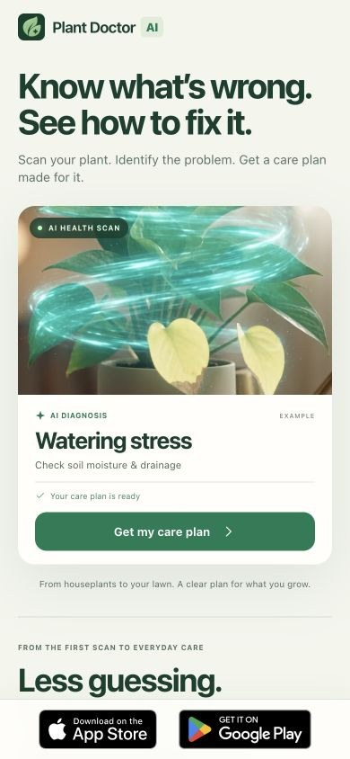
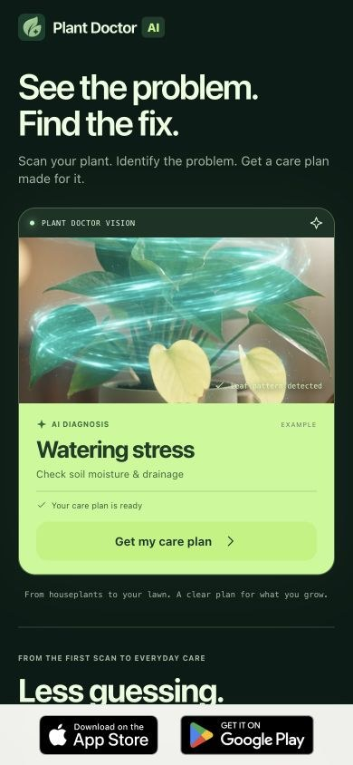
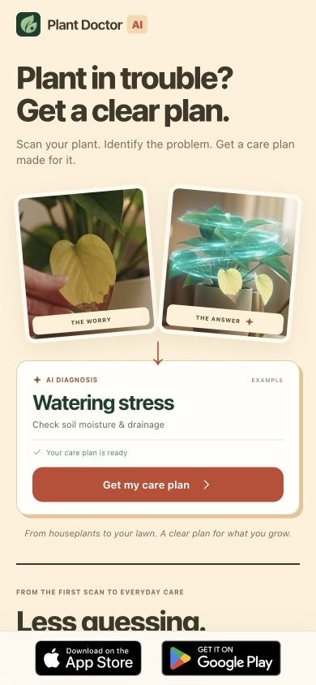
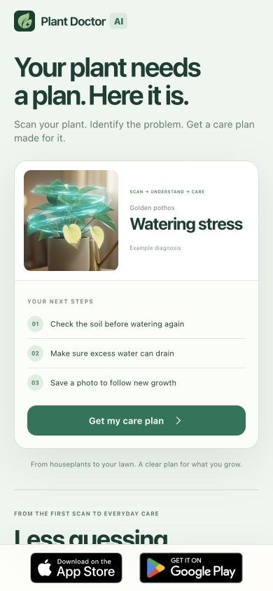
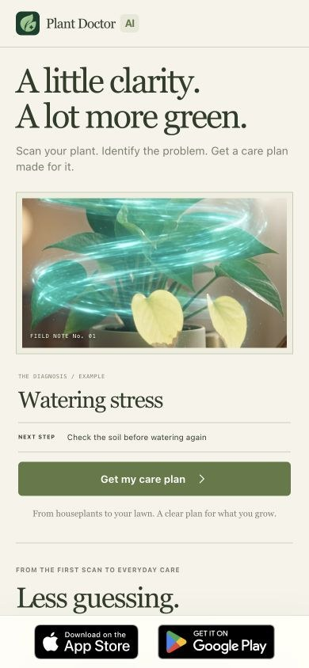

01
Instant Answer

Forest green. A diagnosis you can understand at a glance.
Same broad plant-health promise. Five distinct first impressions. The ad theme below labels your campaign link; it does not narrow the landing page.
Preview links exclude your review visits from analytics. Copy test link gives you the tracked campaign URL.

Forest green. A diagnosis you can understand at a glance.

Midnight green. Make the AI scan the star.

Coral and butter yellow. Turn worry into a next step.

Mint and white. Show exactly what to do next.

Warm paper and olive. A plant-care field guide.
Every App Store or Google Play button records an intent event and opens a coming-soon message. No store redirect or purchase. Visitors can leave an email to hear about the launch. Compare sessions with a button tap ÷ landing sessions, split by design, store, ad theme and campaign.